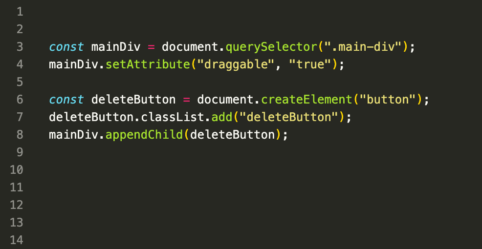
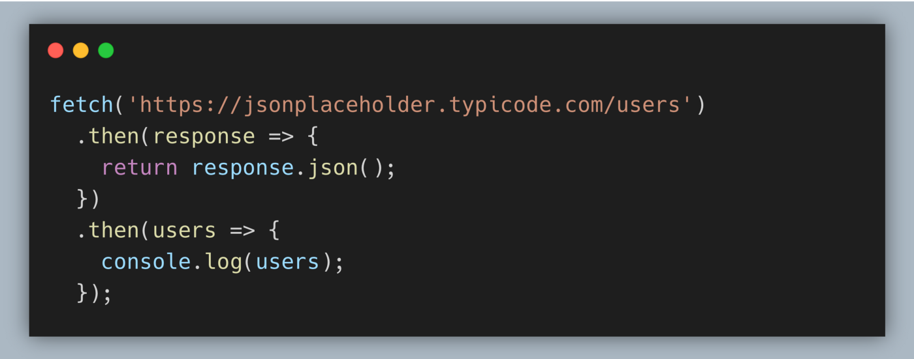

What is an API ?
August, 2021
Just like we humans communicate through language, gestures and expressions with each other similarly,
software products exchange data and functionalities via machine-readable interfaces – APIs.
API stands for Application Programming Interface that allows two applications to interact with each other to access data. It communicates through a set of rules and the communication is done using a programming language called "JSON". An
API takes requests or response of a user to the system, translates and returns the system's response. APIs generally simplify and speedup the software development. Every action on
phone like checking cricket score or checking weather conditions
or sending messages, uses an API to access and deliver that message. It can be used to update or delete data. For example: when a user clicks "add to cart" while E-shopping, an API tells the site that a user has added a product to the cart and the website puts the product in cart and the cart is updated. The purpose of an API is to create an exchange of information so seamless that it goes unnoticed by the end user.
- GET: requests data from the server
- POST: sends new information to server
- PUT: updates existing data on a server
- DELETE: removes or deletes a blog post
There are four types of API actions:
Github
August, 2021
GitHub is a website and service that uses Git, the open source version control software that lets multiple users make separate changes to single project at same time. With GitHub, developers can build code, track changes, and innovate solutions to problems. In simpler words, Git is a code kepping mechanism that keeps record of your code/source files, what changes are done to file, who did it and allows you to rervert those changes and move back to initial file.
multiple choices, around README, .gitignore, LICENSE. To get started chose the default options.
homework:
Read about open source LICENSE. Explore LICENSE of some famous open source repositories.why git
create a repo
publish repo
make commits
write good commit messages
push commits to server
some markdown for documentation
What is a query selector?
August, 2021 
The querySelector() is a JS method that helps in searching of elements. This method in HTML is used to return the first element that matches a specified CSS selector(s) in the document. But to return all elements inside element matching the given CSS selector, "querySelectorAll( )".If no matches are found, null is returned.
syntax : document.querySelectorAll(" CSS Selectors");
CSS Selectors are used to select HTML elements based pn their id, classes, types etc.
If an element has the id attribute, we can get the element using the below method, no matter where it is.
var idSelector = document.querySelector("#id");
var classSelector = document.querySelector(".class");
A comma can be used to separate multiple selectors.
Pseudo-classes in the CSS selector like :hover and :active are also supported. For example,
document.querySelectorAll(':hover'); This will return the collection with elements that the pointer is over now.
There are also other methods to select elements but querySelector is more powerful and shorter to write.
Fetch()
August, 2021 
The fetch method is used to request to the server and load the information in the webpages. The request returns the data in JSON format. This method returns a promise.
- URL: The url to which the request is to be made.
- Options(optional parameters): It is an array of properties.
This method takes two parameters: